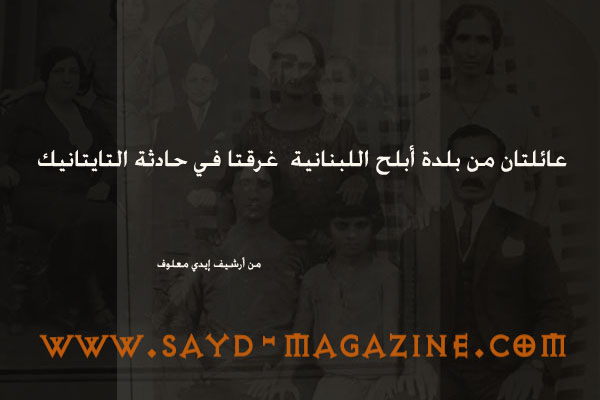
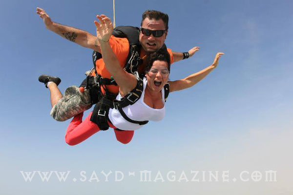

الأرشيف — كل المقالات (705)
رقم قياسي في اصطياد اكبر سمكة في العالم في تايلند
يعتبر الصيد مهارة ولكنه يحتاج إلى حظ كبير أيضاً.. وهكذا كان حظ جيف كوروين، الناشط البيئي الأميركي في اصطياده لأكبر سمكة في العالم في نهر "Maeklong" بتايلاند. وبحسب صحيفة "ميرور" ا…
يصدر قريبا ( .. ) كتاب سيثير اهتمام أبناء الطبيعة
الدليل الحقلي لثدييات الشرق الأوسط يخاف الكثيرون من الكتب العلميّة التي تكثر فيها الشروحات المعقّدة والفلسفات المتشابكة والتفاصيل المملّة التي تؤدي الى إحداث بلبلة في التفكير عوضا…
تنزانيا... أيقونة الصيد في العالم برّاً وبحراً
تحوي اكبر تجمّع من الحيوانات على مستوى العالم إنها جمهورية تنزانيا الإتحادية... تفتح صدرها للمحيط الهندي وتلقي بذراع على بحيرة تنجانيقا وذراع على جبال كيليمنجارو أعلى قمم أفريقيا.…
اول سيارة دفع رباعي في العالم
يتمتع الصيادون برحلاتهم في الصحاري والجبال بقيادة سيارات الدفع الرباعية، التي تشعرهم بمتعة تذليل الصعوبة والمسير قدما رغم وعورة الطرقات وقساوتها، وايضا في كل الظروف المناخية الصعب…
التكنولوجيا المستخدمة ببنادق Beretta النصف أوتوماتيكية
هناك العديد من الخصائص المستخدمة في بنادق Beretta، وما سنقوم بذكره يقتصر على أهم التطورات في البنادق: Gas System تعمل معظم بنادق Beretta النصف أوتوماتيكية بنظام الغاز لإعادة التلق…

بعدسة التاريخ .. صورتان لعائلتين من أبلح غرقتا في حادثة التايتانيك
عائلة جوزيف سمعان من بلدة ابلح .. غرقت في حادثة التايتانيك [caption id="attachment_1752" align="alignnone" width="400"] عائلة الياس بصيبص التي غرقت ايضا في حادثة التايتانيك.. من ب…
منال فخراوي بطلة كأس الشيخة فاطمة بنت مبارك للقدرة، في مهرجان منصور بن زايد العالمي للخيول.
تحت مظلة النسخة السابعة من مهرجان سمو الشيخ منصور بن زايد آل نهيان،وبمشاركة 50 فارسة من البحرين ودول مجلس التعاون وبعض الدول العربية وأوروبا وأميركا، فازت الفارسة البحرينية منال م…

رولا ايمانويل لـ " صيد " : أتمنى العيش في الادغال مع القردة والنمور
بعض الناس يظنّون أن حب الطبيعة يُعبّر عنه بنزهة قصيرة في يوم أقصر، وهذا ما لا يمت إلى الحب بصلة، إنما هو مجرد شعور استعراضي أو محاولة لبحث غير مكتمل عن الأم الأولى التي ننتمي إليه…
جمعية الصيادين العراقية لـ"صيد": مهمتنا حماية هواية الصيد والحفاظ على البيئة في العراق
[caption id="attachment_1742" align="alignnone" width="600"] أمين سر الجمعية د. رعد محمد وفر السعدون[/caption] أعدت المقابلة جوسلين بو راشد [divide] تعتبر جمعية الصيادين العراقية…
صور للصياد اللبناني ايدي معلوف ..وصور بعدسته الرائعة
صور من رحلات الصيد صور بعدسته من خلال جولاته في الطبيعة
وجبتك الأولى قد تكون الأخيرة مع سمك الفوجو
إعداد نينار موسى [divide] Fugu السمكة السامة المنتفخة التي تحمل في جسمها كمّية من السموم قادرة على قتل 30 شخصاً دفعة واحدة، هي طبق ياباني تقليدي قديم، يعتبر من ضمن الاطباق اليابان…
زعفران أغلى التوابل المجففة في العالم
إعداد زينة الجمال [divide] لا يمكن أن تكون هناك مائدة ملوكية إلا وكان الزعفران سيد نكهتها، فهو من أغلى التوابل المجففة في العالم، ويصل سعر الرطل الواحد منه إلى أكثر من 2000 دولار،…
عالسّكة يا تران .. فيلم وثائقي لزينة حداد
https://www.youtube.com/watch?v=0W1WH72Byn0
صور بعدسة محمد حلّال - فرنسا
صور من منطقة "بروفا" الفرنسية ( Provins - France ).
سباق الإنتماء إلى الوطن والجيش
[caption id="attachment_1629" align="alignnone" width="600"] سيدة تخوض غمار المغامرة بين الثلج والسماء[/caption] لم يعد سباق إغارة الأرز "Raid des Cedres" في التزلج (Ski Randonné)…
رموز كشّافات الـ (LED)
إعداد هاني الأحمد [divide] الكشّافات هي من اساسيات العتاد لكل محبي الحياة البرية، وقد ظهرت (حوالي سنة 1899)، حيث كانت تعتمد على اللون الاصفر وزر اضاءة معروف باسم الـ (Bulp) ، ووحد…
اطلبوا المعرفة ولو من القمامة ..
صورة تصيّدتها عدسة الصياد اللبناني ايدي معلوف لشخص يبحث في القمامة عن شيء يستفيد منه فإستوقفته "المعرفة "في مستوعبات النفيات..
بندقية من كاميرات ومعداتها
صور معبرة جدا عن الانترنت .. كاميرات ومعداتها بشكل بندقية في تليمح الى ان العدسة هي ايضا هي كالبندقية يمكنها ان تحقق الهدف .. العدسة لا تقتل الطائر انما تخلّده ..
Daystate Pulsar السحر في الهواء
إعداد هاني الأحمد [divide] الإسم : Pulsar النوع : بندقية هواء الشركة المصنّعة : Daystate المزايا : تتمتع بهندسة رائعة وهي مبنية على انجح نظام الكتروني للبنادق الهوائية ومجهزة بجها…
اضفط ..لأرشفة صوركم الرائعة (بعدستكم)
تتيح مجلة صيد للصيادين المحترفين والفرسان والرماة وابطال رياضات الهواء الطلق ومصوري الطبيعة زاوية ( بعدستكم ) لأرشفة الصور الخاصة بهم ضمن الشروط التالية : - ان تكون الصورة معبرة ع…
عالم السكاكين
إعداد هاني الأحمد [divide] السكين هي من الادوات الاهم في استخدامات البشر من المنزل الى الحياة البرية والصناعية وغيرها، كما انها مرتبطة بثقافات وتراث بعض الشعوب والمجتمعات. في موضو…
خرطوش الصيد وانواعه
يوجد نوعان من خرطوش الصيد بمختلف العيارت. هنا سنتكلم عن نوعين لعيار 12ملم تقسم كما يلي : خرطوش صيد الطيور والحيوانات الصغيرة كالارنب و خرطوش صيد الحيوانات الكبيرة كالغزال والخنزير…
الدراجة الهوائية تحسن حالة القلب وتقضي على الكآبة
[caption id="attachment_1570" align="alignnone" width="463"] دراجة هوائية قديمة[/caption] تعتبر الدراجات الهوائية عنواناً بارزاً في السياحة البيئية، وكثيراً ما يستخدمها محبّو الطب…